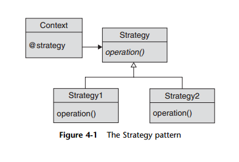

Strategy pattern
The Strategy pattern is a delegation-based approach to solving the same problem as
the Template Method pattern. Instead of teasing out the variable parts of your algorithm
and pushing them down into subclasses, you simply implement each version of
your algorithm as a separate object. You can then vary the algorithm by supplying different
strategy objects to the context—one strategy for producing HTML and a different
one for outputting PDF files, for example, or perhaps one strategy for
calculating Virginia taxes and a different one for computing Pennsylvania taxes.
We have a couple of choices regarding how we get the appropriate data from the
context object over to the strategy object. We can pass all of the data as parameters as
we call methods on the strategy object, or we can simply pass a reference to the whole
context object to the strategy.
Ruby code blocks, which are essentially code wrapped up in an instant object (the
Proc object), are wonderfully useful for creating quick, albeit simple, strategy objects.
